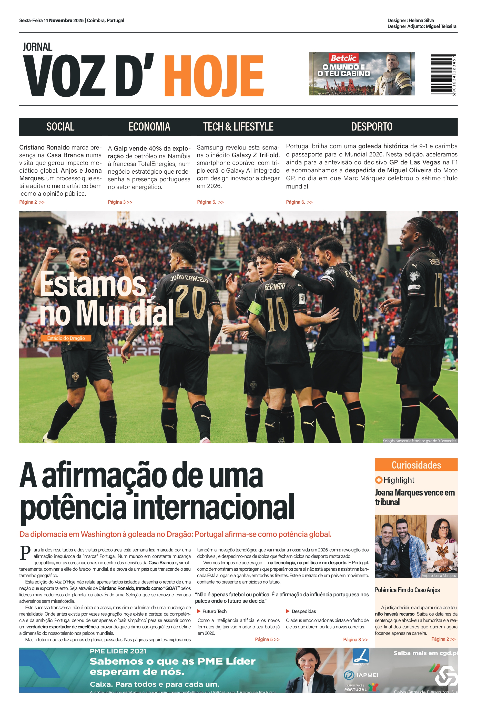
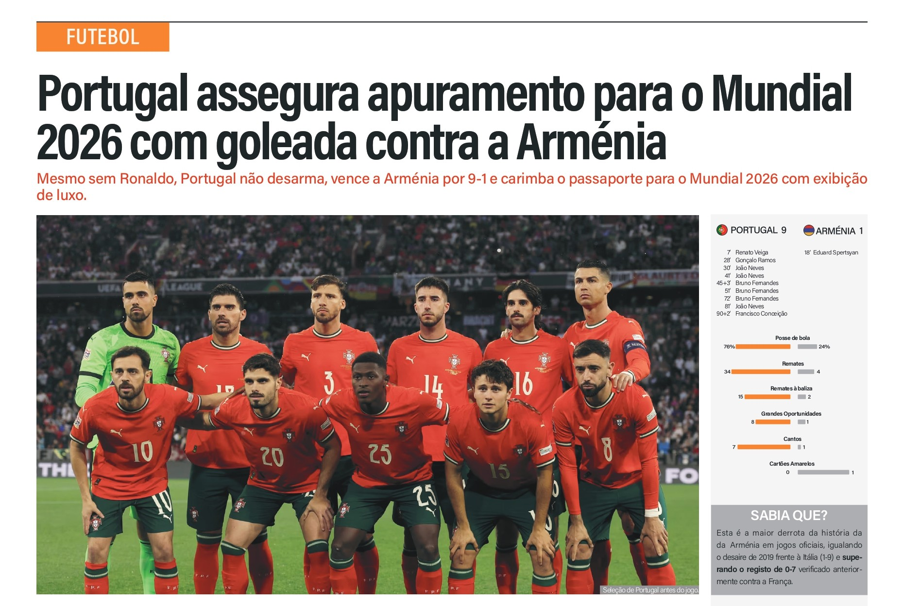
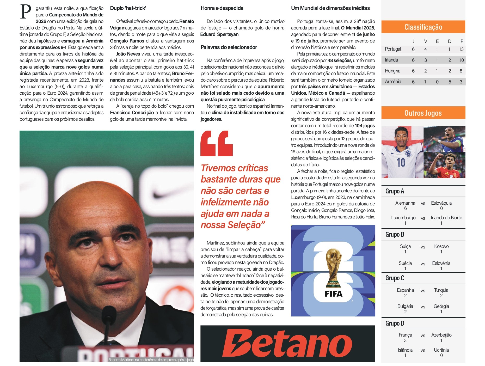
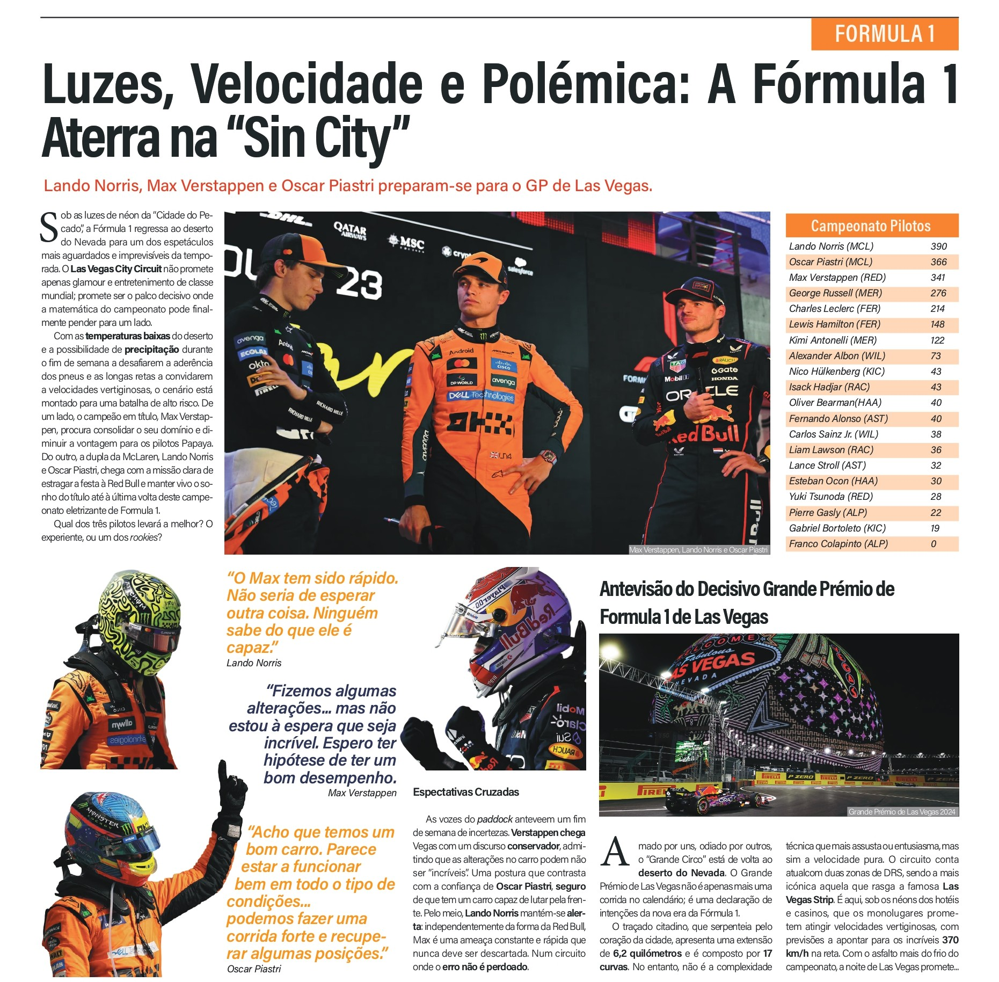
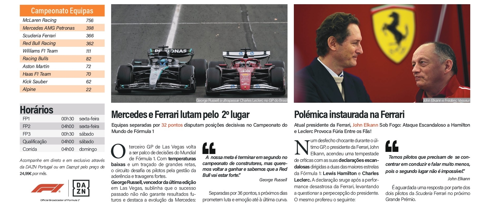
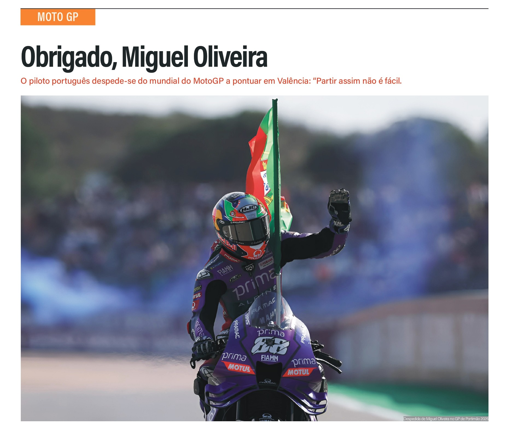
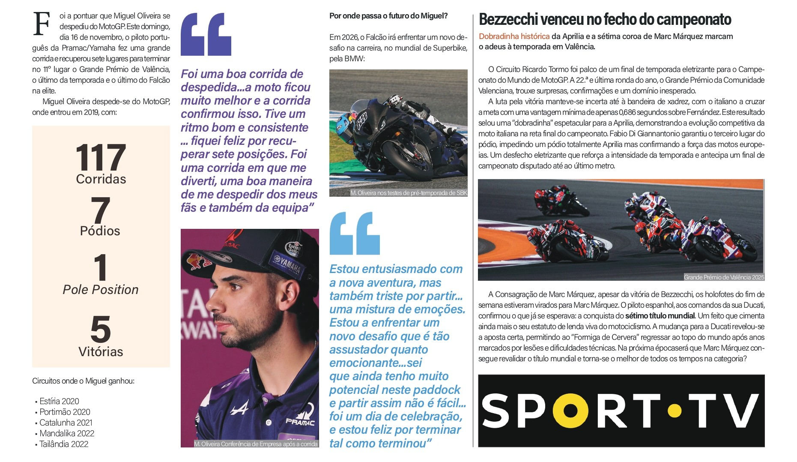

A modern reinterpretation of classic newspaper layouts.
Structured hierarchy and bold typography guiding the reader through the latest on the pitch.


Dynamic layouts capturing the speed and precision of motorsport.


High-impact imagery paired with clean columns for an immersive reading experience.


A softer visual approach, balancing whitespace and contemporary editorial design for cultural news.